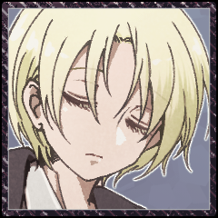
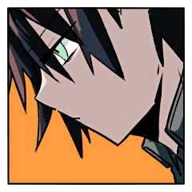
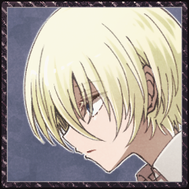
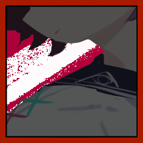
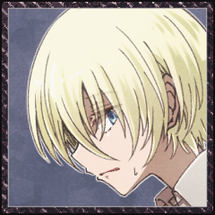

GM
「赤いくつをはいて、踊っておれ。お前が青じろくなって冷たくなるまで、お前のからだがしなびきって、骸骨になってしまうまで踊っておれ。お前はこうまんな、いばったこどもらが住んでいる家を一軒、一軒と踊りまわらねばならん。それはこどもらがお前の居ることを知って、きみわるがるように、お前はその家の戸を叩かなくてはならないのだ。それ、お前は踊らなくてはならんぞ。踊るのだぞ――。」
◆プロローグ
GM
あの裁判からしばらくの間、四人は旅を続けていた。
GM
強大な救世主や亡者との裁判をくぐり抜け、気がつけば、ひとかどの救世主一行となっていた。
GM
エールさんは今回のシナリオに参加する動機として依頼を含めていますが、懇意としている組織に希望はありますか？
GM
では、みなさんは公爵家の所有する屋敷に呼びつけられ、仕事の依頼をされています。
GM
「赤い靴」とは、聖遺物に相当する不思議の品である。履いた者に際限なく力を与えるが、徐々に心身を支配していく。
GM
ある救世主一味が所有していたが、一月前に内輪揉めにより全滅。赤い靴は救世主のうち一人の身体に寄生し、現在は王家の庭園を彷徨っているらしい。
GM
知っていても知らなくても構いません。こういったことを説明してくれます。
エール
与太話の多すぎる堕落の国のことだからなあ。
エール
初耳かも。初耳ですか？ わかりません。
三人の顔を見ましょう。
ラサ
適当な相槌を打ちながら、なんとはなしに自分の足元を見ている。
センバ
「なんか呪いの装備品って感じですね」
やな感じだなあの顔
ラサ
転移させられたときと同じ、何の変哲もない茶色のローファーだ。
クラレット
「そう……」
少しばかり思案するような顔で相槌を打つ。堕落の国で新調したストラップシューズを見下ろした。
ラサ
「名前だけは聞いたことあるなあ。といっても、元の世界でだけど」
エール
事あるごとに同行者の顔を窺う癖がある。
まともに足を守れる靴を履くようになりました。
センバ
スニーカーを履いている。
「おとぎ話にそんなのあったかも」
ラサ
「履いたが最後、死ぬまで踊り続けなければいけない、って靴」
GM
「ラサ様の知る赤い靴の伝承に加え、この赤い靴には、比類なき猟奇の力が与えられる、というものがありますね」
GM
「私も直接見たわけではありませんが、聞くところによると、履きし者は象のごとき脚力を得て、救世主や亡者の首を簡単に蹴り飛ばすのだとか……」
GM
「それが誰の管理にもなく独立して動いているというのは、看過されざる事態」

エール
まったく大変です。
それには同意。
GM
というわけで、公爵家の者はあなたたちに赤い靴の入手を依頼します。
GM
ちなみにここで依頼を断ってもらっても、シナリオは進みます。
ラサ
「大丈夫なのかなあ。聞く感じ始祖とかエース級だったりしない？ それ」
ラサ
「ボクたちを消す公爵家の陰謀かもしれないよ」
エール
「うーん」考え込む。ラサはそういうとこあるので、今更慌てませんが。
クラレット
「まあ、いつ王家の庭から飛び出してくるやもしれないというのは、困ることだけれど……」
エール
「様子見だとか……偵察までの範囲なら、というのは」
どうだろうか、と、これは仲間たちに。
エール
「クラレットの言う通り、いつ飛び出してきて遭遇するとも分からないし……」
クラレット
「偵察で済むかも分からないけどね……」
ラサ
「まあ、赤い靴が救世主カウントされるなら、責務をクリアするにはちょうどいいとは言えるかも」
クラレット
気乗りはしないが、断固として断るほどの理由も感情もなく。ならば仲間たちに従うのみだ。
クラレット
「これ今どうなってる？ 多数決で行く方かしら？」
クラレット
なんかみんな様子見みたいな顔してるなと気づいた。
クラレット
たまには様子見してみようと思ったらこのざまよ。この人たち本当に主体性がないわ。
エール
ふわ……ふわ……とした意見は出すんですが。
クラレット
エールの態度、腹立つわね……（言わない）
センバ
主体性なし人間だ、その場の空気を読んでいる。
ひとりで空気読みエクストリーム。
ラサ
「じゃ、エールの案を採用して、偵察ってことにしますか」
センバ
「任せて下さい、有耶無耶にできます、何もかも」
クラレット
「まあね……堕落の国で希望を持って生きるなんてできやしないし」
クラレット
「いつだって緩慢な自殺。今回は華々しい最期を飾れるかしら？」
GM
というわけでみなさんは庭園へと旅立つことになりました。
GM
庭園まではまあまあ遠いので、大廊下というワープゾーンを経由して向かうことになります。
GM
大廊下を抜け、庭園まであと一日歩けば着くかな、といったところで野営をすることになりました。
GM
PC三人のうち、誰か一人がなんとなく寝付けなくて、目を覚まして起き上がります。
ラサ
目を開くと、ラサが自分の荷物をいじくっているのが見える。
センバ
「う、うーん……？」
物音で目を覚ました。様子をうかがう。
ラサ
交代で見張りをしていて、ラサの番だったのだ。
センバ
「珍しいですね。なんか多淵さん忘れ物とかしても『今は必要なかっただけのことだよ』とか言いそうなのに」
センバ
「自信があって、堂々としてて、頼りになって……ちょっと疑り深くて、過激な所があって、……まあまあ長い付き合いの女子……」
センバ
ぎゃ、逆！？てことは……自身が無くて頼りがいが無くて疑うことがなくて穏当で……
ラサ
「しみじみ君って風格とかつかないな、って思ってる」
センバ
「う……そう言われると……そうですね。なんか……ずっと必死でやってきてるっていうか、余裕ないって言うか……」
センバ
「エールさんの時も正直ヤバかったですよね。今じゃ仲間ですけど」
ラサ
「ヤバかったどころか何かの間違いで生きてるって感じ」
ラサ
「どうやらこの世界はボクたちに生き延びてほしいらしい……これもまた陰謀だな」
センバ
「……何か変わんないですね、多淵さんも」
言いつつ笑った。そういう変わらない所が頼れる所だと思っている。
センバ
「え、え”っ、俺の知らない所で実は悪に染まってて裏切るチャンスを伺ってるとか無しですよ」
センバ
「裏切る時は一撃で俺がわかんないうちに終わらせてくださいよ、なんか多淵さんが裏切るかもって思うと……ちょい嫌だし……あー……あー……」
ラサ
「生き延びれば生き延びるほど、その日は近づくんだぞ」

センバ
「……まあ。知らないつもりではないですけど」
ラサ
「今だって、わざわざヤバい相手と裁判するかも、ってなってんのはさ」
ラサ
雑魚狩りなんてしたってマジでしょうがないからな、この世界。
センバ
「夏休みの宿題の事とか、後回しにしたいってのと多分同じです、許されるなら出さずになあなあで誤魔化したいですよ」
ラサ
「君って死ぬ寸前まで、なんとか後回しにできないかなって思ってそう」
ラサ
「それはまあ、君のいいところではあるとも思ってるし……」
センバ
「まあ、どうせいつか終わるし、誰か別の人が出来るなら……あんま頑張らずにどうにかしたいんですよ」
ラサ
「じゃあ、ボクと裁判することになっても、それぐらいの感じでいなよ」
ラサ
「そろそろ休みなよ。無駄話ばっかりしてると、明日に響くぞ」
センバ
「緊張してるなら、手にあれ、アレ書いて飲むといいですよ！！」
センバ
ああ、クソ、なんだっけ？何書いて飲んだらいいんだったっけ。
マズい、俺はどうしてこんな時も思いつかないんだ。
いや、言わなきゃ良かったんじゃないか？これ！いや。でも。
センバ
「うっさいなあもう……普段通りに居て下さいよ、頼りにしてるんですから」
センバ
言いつつ眠りに戻っていく。休まないといけないのは事実だし。
GM
センバが目を閉じると、ラサは再び荷物をあさり出す。
GM
眩いばかりの色とりどりの花壇、冷たく澄んだ水を湛えた噴水、赤いバラの花をつけた巨大な樹。
GM
ラサの痕跡が、ラサの居場所が王家の庭園であることを示していた。
エール
美しい庭園だ。堕落の国にある光景とは思えない。
センバ
「……多淵さん、先に行っちゃったみたいで……その……」

エール
けれど景色を楽しむ気にはなれなかった。
センバ
責任を感じているが同時にどうにか誤魔化して俺のせいじゃないですと言いたい気持ちもある。
GM
この庭園は、フラミンゴの亡者や庭師の亡者が闊歩する、危険な迷宮でもある。
エール
誰のせいとかじゃあない。
その後の交代はわたしだったし。
センバ
「誰かが通った後みたいな……誰かが狩り尽くした後みたいな」
エール
ラサひとりでそれが為されるはずもないが。
自分たちはとある噂を聞いている。
センバ
「いくら多淵さんが凄くても……相手の数考えるとですよ」
クラレット
「赤い靴は全滅した救世主の一人に寄生していると言われていたけど……」
クラレット
「寄生された救世主がやったのか、それとも……」

GM
見覚えのあるセーラー服の背中が見えた。
クラレット
追います。少なくともクラレット一人は。
センバ
追います。やはり知り合いを見捨てるのは寝覚めが悪いのです。
GM
凄まじい速度で、なにか球状のものがあなたたちめがけて飛んでくる。

エール
二人を庇う形に飛び出して、それを腕で受ける。
少女
飛んできた方向を見やれば、そこには人影がある。
エール
自分の腕に当たって弾けた肉塊が、地面へと落ちる。
少女
しかしそんなものよりも、もっと目を引くものがあった。

少女
「何日か数えるのが面倒だから、見つけ次第達成するようにしてるの」
クラレット
「その子は多渕ラサ。あたしたちの仲間よ」
エール
コートについた血を払って、少女の姿へと向き直る。
センバ
思考は凍り付いている。呆然としている。考える隙間は無い。
センバ
ただ。目を閉じることはない。見ている。
目を逸らさない。それが唯一の成長。悪化でもある。
その中で目の前の少女に対する結論を無理に出そうとする。
センバ
結論という逃げ道。それは。
「一度、引きませんか」
エール
痺れる腕を庇いながら、センバへと視線を向けた。
クラレット
「……」
嘆息を一つ。それから、頷いた。
センバ
「引きますよ」
先延ばしで、課題の延長でしかない事くらい、俺もわかってる。
クラレット
怒り、困惑、恐怖。
それらすべてを目の奥に隠して。
クラレット
「“積もる話を片付けるために、お茶会を”」
エール
クラレットの言霊の紡がれる一方に、少女から距離を取っている。
二人を庇える立ち位置のままに。
センバ
隙があるなら、逃げなくてはならない。
それが今の最善の行動だと信じて。
エール
その弛緩を読み取って踵を返す。
二人もそうすると知っているから。
クラレット
白と黒のエプロンドレスが靡いていく。
次の裁判が終わるころには、ラサも装備を新調してもいいかもしれない、なんて話していた。
クラレット
こんなものになってほしかったわけじゃないのに。
“赤い靴”
その一瞬で、三人は手の──脚の届かないところに行ってしまった。
“赤い靴”
──もっとも、逃げるつもりもないみたいだけど。